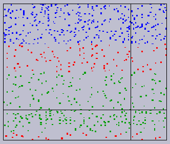

Math 18.325: Polyhedral Methods in Optimization and Equation Solving
FALL 1997
M W 2:30-4:00 in 36-153
Instructor:
J. Maurice Rojas
LECTURE NOTES
...such as they are, can be obtained by e-mailing me.